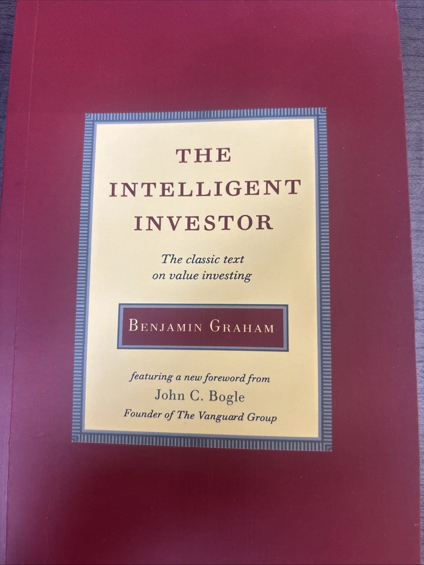

Library › Money & Finance
The Intelligent Investor — Summary & Key Lessons

The definitive book on value investing — Mr. Market, margin of safety, and the discipline Warren Buffett calls 'by far the best book on investing ever written.'
📖 OPEN THE FULL INTERACTIVE BREAKDOWN →🌐 Read it in Hindi, Hinglish, Gujarati, Tamil & 22 more languages — free, with audio.
💡 The Big Idea
Graham — Buffett's teacher and the father of security analysis — built the intellectual foundation of rational investing on a handful of unbreakable ideas: an INVESTMENT operation promises safety of principal and adequate return through analysis (everything else is speculation, however respectable it looks); the market is a manic-depressive business partner (Mr. Market) whose daily quotes are options, not orders; a stock is a piece of a business, not a ticker symbol; returns are protected not by brilliance but by the MARGIN OF SAFETY — buying so far below conservative value that even bad luck and error can't destroy you; and the investor's real battlefield is internal: temperament beats IQ. Know whether you're a defensive or enterprising investor, act accordingly, and never confuse a rising price with being right.
🧠 The 5 Key Lessons
Lesson 1: Investment vs. Speculation: Know Which Game You're Playing
Chapter 1: Investment versus Speculation
Graham's foundational boundary: 'An investment operation is one which, upon THOROUGH ANALYSIS, promises SAFETY OF PRINCIPAL and an ADEQUATE RETURN. Operations not meeting these requirements are speculative.' Three tests, all mandatory — and by them, most market activity (including most professional activity) is speculation wearing a suit: buying on tips, momentum, stories, or the expectation that someone will pay more tomorrow. Speculation isn't illegal or even always foolish — but it becomes fatal when mistaken for investing: when done with money you can't lose, or when the speculator believes his luck is analysis. Graham's prescription for the honest speculator: wall it off — a strictly limited 'mad money' account, never refilled from winnings' euphoria, never merged with the investment program. The catastrophic error isn't speculating; it's not KNOWING you're speculating.
📖 Example: Zweig's commentary (in the modern edition) supplies the eternal exhibit: the dot-com bubble, where 'investors' bought companies without earnings, products, or plausible futures at any price — analysis absent, principal unprotected, returns assumed — and… Read the full example →
⚡ Do this: Audit every holding against Graham's three tests: did analysis precede purchase? Is principal protected by the price paid? Is the expected return adequate rather than fantastic? Anything failing goes into a capped, separate speculation account — or out.
Lesson 2: Mr. Market: Your Manic Business Partner
Chapter 8: The Investor and Market Fluctuations
Graham's most famous invention: imagine you own a business share with a partner, Mr. Market, who every day names a price at which he'll buy yours or sell his. Some days he's euphoric and quotes absurd highs; some days he's despondent and quotes panicked lows. Two properties make him useful: he ALWAYS returns tomorrow with a new quote, and he NEVER minds being ignored. The intelligent response: his quotes are options, never verdicts — exploit his depression (buy), consider exploiting his mania (sell), and otherwise let him rave while your view of the business's actual value governs. The tragedy Graham diagnosed: most investors invert the relationship, letting the quote INSTRUCT them — buying his euphoria, selling his panic — which converts the market's chief gift (liquidity plus periodic mispricing) into its chief hazard. Price fluctuations have exactly one true message for the owner: opportunity or noise. Nothing else.
📖 Example: Graham's own arithmetic proof spans the book: the same company's stock quoted at wildly different prices within months while the business barely changed — the quotes measured Mr. Market's mood, not the enterprise. Buffett's application became legend: buying… Read the full example →
⚡ Do this: Write your Mr. Market protocol before the next panic: at what price would you happily buy MORE of what you own? Keep the list current. When quotes drop toward it, consult the business's value — not the news, not the mood, not the quote's opinion of itself.
Lesson 3: Defensive or Enterprising: Choose Your Lane Honestly
Chapters 4–7, 14–15: Portfolio Policy
Graham splits all investors by effort and temperament, not intelligence. The DEFENSIVE investor prioritizes safety and freedom from bother: prescription — mechanical diversification (25–75% split between quality bonds and stocks, rebalanced), 10–30 large, prominent, conservatively financed companies with long dividend records, bought at reasonable price multiples, or (in the modern reading) simply index funds; then STOP — no forecasting, no dancing. Dollar-cost averaging automates the temperament. The ENTERPRISING investor accepts real work — genuine security analysis, hunting bargains in unpopular large companies, special situations, and net-nets — for the chance of better returns. Graham's stern warning between the lanes: there is no comfortable middle; the 'half-enterprising' investor who dabbles with neither discipline nor devotion gets speculation's risks with investment's returns. Beating the market is a full-time job — treat it as one, or don't apply.
📖 Example: Graham's own defensive checklist did its quiet work for generations: adequate size, strong finances (current assets twice current liabilities), twenty years of dividends, no earnings deficit in a decade, moderate P/E and price-to-assets — filters that… Read the full example →
⚡ Do this: Declare your lane in writing: defensive (automated plan, index/quality list, rebalancing calendar, no forecasts) or enterprising (define your analysable niche and weekly research hours). If you can't fund the enterprising hours, the defensive lane isn't settling — it's self-knowledge.
Lesson 4: Margin of Safety: The Three Most Important Words in Investing
Chapter 20: 'Margin of Safety' as the Central Concept
Asked to compress sound investing into one motto, Graham answers: MARGIN OF SAFETY — the gap between price paid and conservatively estimated value, sized to absorb bad luck, bad analysis, and a future nobody can forecast. The engineer's logic: build the bridge for 30,000-pound trucks and run 10,000-pound ones across it. Its functions: it renders precise forecasting UNNECESSARY (you profit even if the future is mediocre, because you didn't pay for brilliance); it converts diversification into a mathematical ally (each purchase has favorable odds; the group makes the odds reliable); and it draws the true line between investment and speculation better than any label — the speculator's 'margin' is his opinion that he's right, the investor's margin is arithmetic that survives his being partly wrong. Growth investing can qualify — but only when the growth is bought below conservative appraisal, which enthusiasm almost never permits. Risk, properly defined, isn't volatility: it's the permanent loss that arrives from overpaying.
📖 Example: Graham's bond-cover illustration sets the template: a railroad earning five times its interest charges has a margin; one earning them barely, none — and the same logic prices equities. The concept's negative proof is every bubble's autopsy: buyers of the… Read the full example →
⚡ Do this: Before any purchase, write the margin explicitly: your conservative value estimate, the current price, and the discount percentage. Set your personal minimum (Graham's disciples use a third to a half below value) — and when no margin exists anywhere, discover Graham's most underrated position: cash, and patience.
Lesson 5: The Investor and His Self: Temperament Is the Edge
Chapters 8, 20 & Zweig's Commentary
Graham's deepest teaching wears the plainest clothes: 'The investor's chief problem — and even his worst enemy — is likely to be himself.' Markets don't produce most losses; reactions to markets do — chasing what just rose (buying euphoria), fleeing what just fell (selling despair), mistaking a bull market for personal genius, and abandoning sound plans at maximum-pain moments, which are precisely when plans matter. The armor is structural, not motivational: written policies decided in calm (allocations, buy criteria, rebalancing dates) that pre-commit future behavior; automation (dollar-cost averaging) that removes decisions from mood's jurisdiction; ignoring quotations for months at a time as a POLICY; and measuring success against your plan and the businesses' performance — never against neighbors, indices' hot years, or last quarter. The intelligent investor, Graham concludes, is a realist who sells to optimists and buys from pessimists — a temperament available to anyone and adopted by almost no one, which is exactly why it still pays.
📖 Example: The book's living proof outlived its author: Buffett — who called the 1949 edition the best investing book ever written — attributes his results not to superior formulas but to Chapter 8 and Chapter 20 'more than any other ideas': treat quotes as servants,… Read the full example →
⚡ Do this: Draft your Investor's Constitution this week: target allocation, buy criteria, rebalancing dates, a maximum quote-checking frequency, and the sentence 'I will not sell because prices fell nor buy because they rose.' Sign it. When the next mania or panic arrives — and it will — obey the calm author, not the excited reader.
✅ 5-Step Action Plan
- Run every holding through the three-test definition; cap speculation separately.
- Write your Mr. Market buy-list before the next panic arrives.
- Declare your lane — defensive automation or enterprising hours — honestly.
- Never buy without writing the margin: value, price, discount percentage.
- Sign your Investor's Constitution and let it outvote your moods.
💬 Best Quotes from The Intelligent Investor
- “The investor's chief problem — and even his worst enemy — is likely to be himself.”
- “In the short run, the market is a voting machine but in the long run, it is a weighing machine.”
- “The margin of safety is always dependent on the price paid.”
Interactive version: mark lessons as read, listen in your language, share quote cards.